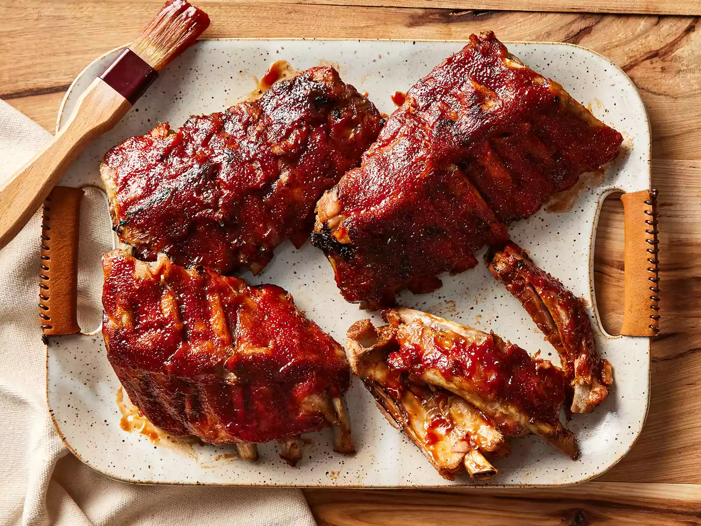

Slow Cooker Baby Back Ribs

Got a slow cooker? Try this!
These slow cooker ribs are the best — they turn out perfect every time!
Ingredients
- 3 pounds baby back ribs, trimmed
- salt and ground black pepper, to taste
- ½ cup water
- ½ onion, sliced
- 1 clove garlic, minced
- 1 (18 ounce) bottle barbeque sauce
Steps
- Gather all ingredients.
- Season ribs with salt and pepper.
Pour 1/2 cup water into the slow cooker, then add ribs. Scatter onion and garlic
- When the ribs are almost finished, preheat the oven to 375 degrees F (190 degrees C).
- Transfer ribs from the slow cooker to a baking sheet; discard onion and garlic. Coat ribs with barbeque sauce.